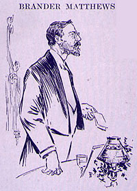

|  BRANDER MATTHEWS said: It was with the greatest pleasure I accepted your invitation to be here this evening, and I have been delighted to hear the proper praise paid to Samuel L. Clemens, the man, and Mark Twain, the humorist. Clemens, the man, more than any one else known to me, combines a childlike simplicity with a manly sincerity. With Mark Twain, the humorist, his humor is always good, his humor is never irreverent, never making for things of ill repute. The Chairman, in introducing me, took the great liberty of suggesting that I was the champion of the American language. I should like to be able to take that position, if I thought there was such a thing as an American language and not rather a better thing, the American branch of the English language, because it belongs to us as our birthright. They can use the perverted British language, as they do at the present time, if they like. If I were allowed to take that point of view, I should like to dwell for a moment on the masterly style of our guest. He seems to me one of the great masters of the English language. (Applause.) His is a great style. It is a style of his own, of course, a style direct, however, -- flexible, unacademic, rich with the fervor and the style of the American character, of the undistilled American, like the style of Franklin, like the style of Lincoln. He is a master of language, never slacking, but pulling words to do his bidding. He seems to me one of the real masters of our vigorous English speech. And since I have taken the liberty of disagreeing somewhat with the chairman who introduced me, perhaps I can take the liberty of disagreeing a moment with the guest of the evening and saying that when he chooses for purposes of his own to suggest that he is not a moralist, he is doing an injustice to himself, for one of the qualities which I should pick out of his work, more strongly than another, more particularly than another, is the morality of it, the essentially ethical doctrine, the natural sense that underlies it. (Applause.) This evening Mr. Lloyd Osbourne reminded me of a day which has always been a delightful memory, the single afternoon when I had the pleasure of meeting Mr. Robert Louis Stevenson; it was in the smoking-room of the Savoy Club on a damp afternoon. A large part of that talk or that hour that we had was spent in discussing Huckleberry Finn and Tom Sawyer. We agreed in praise; we agreed in thinking that either of those books was far better than that established favorite of the eighteenth century, Gil Blas, and, as Mark told me once he had never had a chance to read Gil Blas; and we agreed, I say, that Huckleberry Finn was the better book of the two, not solely because it had a larger field, not solely because it was the Odyssey of the Mississippi, not solely because it was the picture of a vanished civilization, but mainly because there is a finer, a stronger, a more strenuous moral decorum. Whatever Mark Twain may say, he has a moral of his own. He does his own thinking and he makes us think while he makes us laugh. He has his own ethical outlook on life, and it would be well if that outlook were ours also. Consider for a moment The Man that Corrupted Hadleyburg -- a parable like The Pilgrim's Progress and worthy of that master; worthy of Swift without the maliciousness of Swift's antipathy; worthy of Voltaire without Voltaire's malice. You can easily understand what the Englishman meant when he is said to have told what he said to Mark Twain, -- that he would give ten pounds if he never read Huckleberry Finn or The Man that Corrupted Hadleyburg, so that he might have the pleasure of reading them for the first time. (Applause.) |